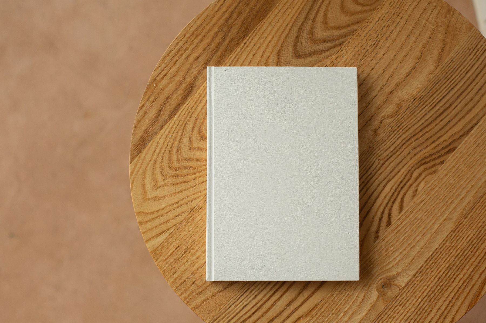
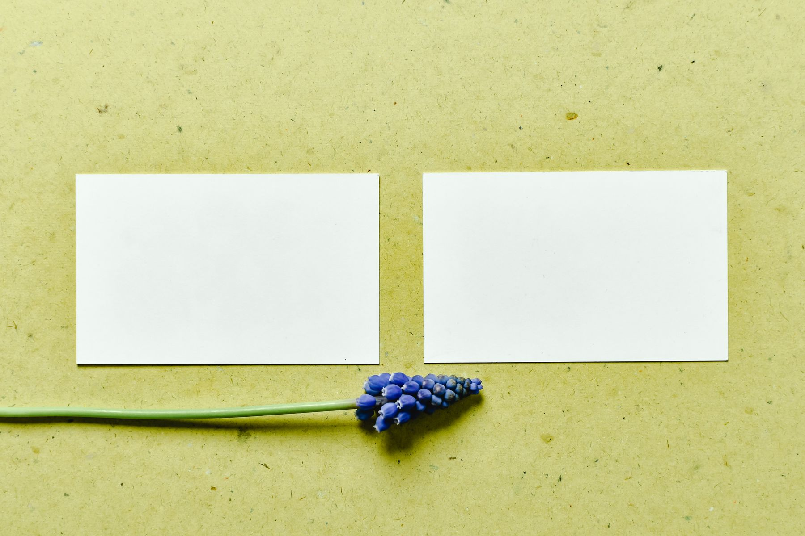
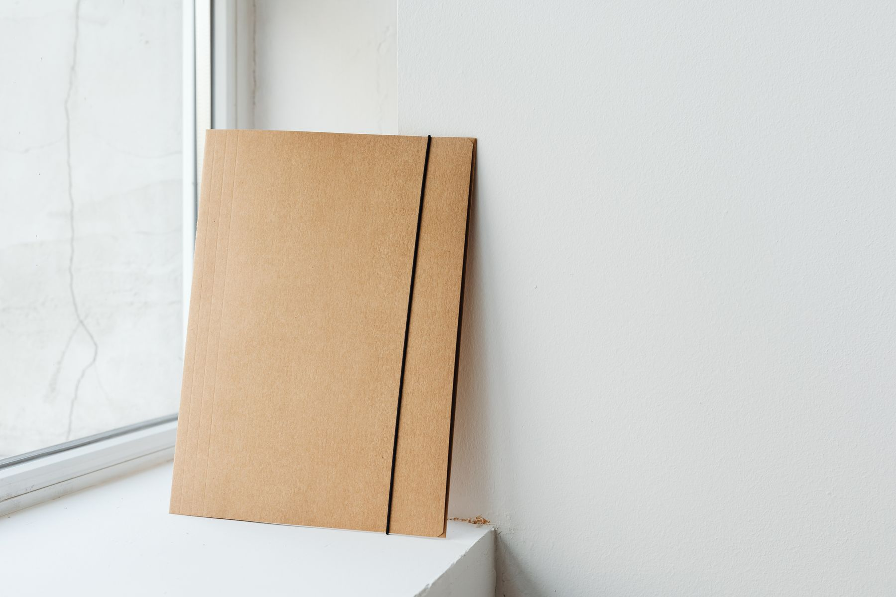
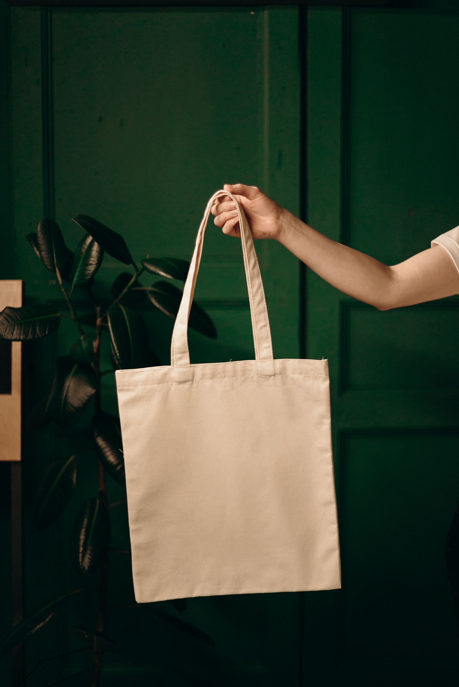
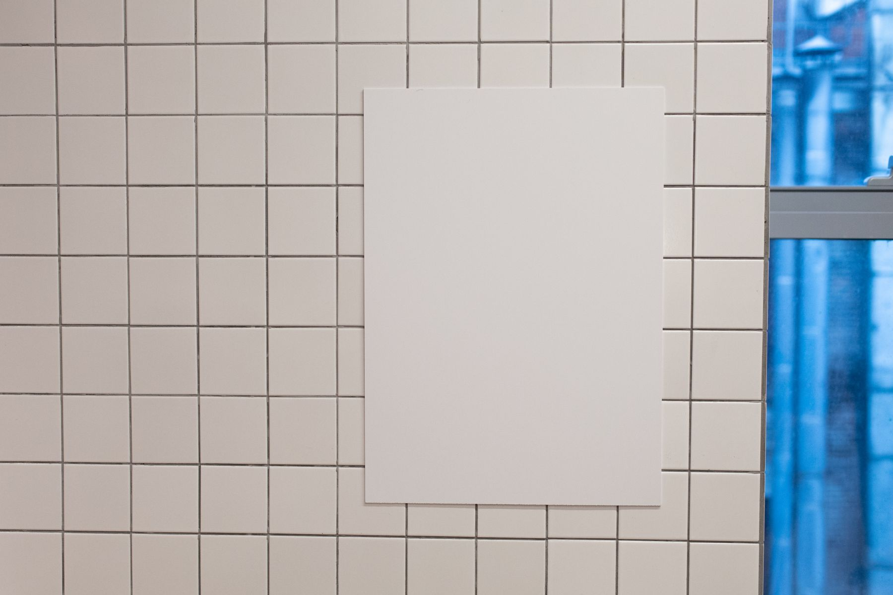
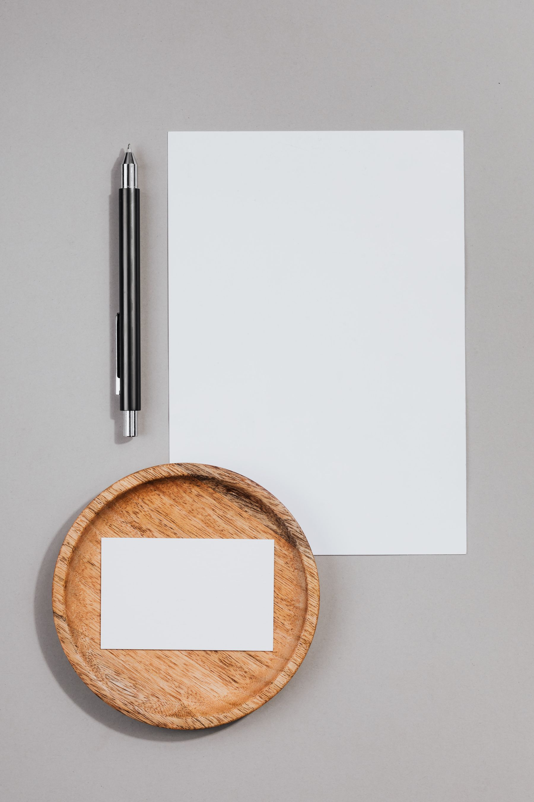
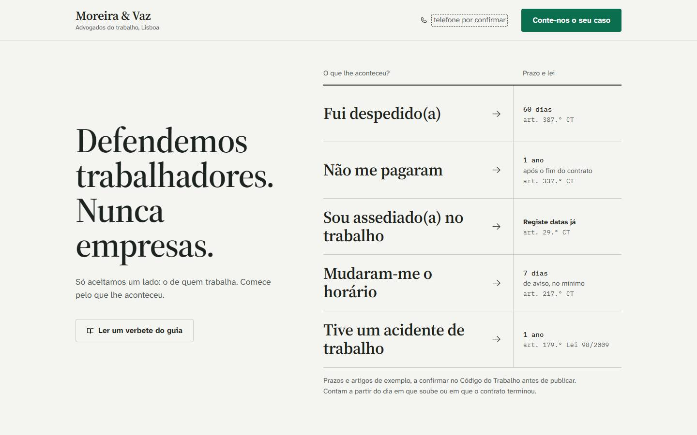
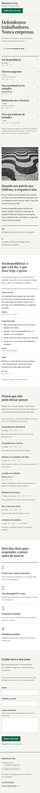
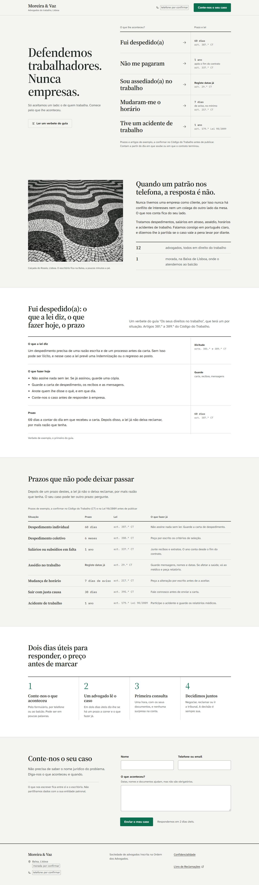

Assinatura vertical
Apresentação de marcaOutubro de 2026
Verbete 02Conceito
Comece pelo que lhe aconteceu. O guia diz o que a lei dá, quanto tempo há e como começar.
Para quem acaba de ser despedido, não pago, assediado ou mudado de horário, a Moreira & Vaz é o escritório de Lisboa que só representa trabalhadores e que responde primeiro à pergunta que importa: o que posso fazer, e até quando.
Posicionamento escrito a partir da identidade escolhida e da intenção do escritório, sem estudo de mercado. Proposta para aprovação.
Verbete 03Público e voz
Quem trabalha e acaba de ter um problema com quem lhe paga.
Trabalhadores por conta de outrem em Lisboa e arredores, e quem procura por eles: um familiar, um amigo, um colega. Chegam horas depois do acontecido, muitas vezes pelo telemóvel, e precisam de uma resposta antes de um nome jurídico.
Leitura da identidade e da intenção, não um dado de estudo.
O guia de bolso: sabe, explica, e fica do seu lado.
Não o sábio distante nem o herói de tribunal: um manual que se leva no bolso e se abre na página certa. Autoridade que vem de dizer a lei em português claro, não de colunas e martelos.
Verbete 04Construção
Verbete 05Sistema
Assinatura principal, horizontal
Assinatura vertical
Símbolo só, a partir de 24 px
Invertida: papel sobre tinta, patilha em papel
A uma cor: carimbos, fax, impressão a preto
Espaço livre: a altura da patilha em volta; mínimo 24 px
Usos incorretos
Verbete 06Cor e tipo
Réguas: 2 px de tinta abrem um índice ou uma tabela; 1 px em #C8CEC7 separa as entradas. Cantos de 4 px só nos controlos.
Títulos e entradas do índice: Source Serif 4, semibold
Fui despedido(a)
Texto: Atkinson Hyperlegible Next, 19 px, 60 a 66 caracteres por linha
Um despedimento precisa de uma razão escrita e de um processo antes da carta. Sem isso pode ser ilícito.
Dados: IBM Plex Mono, só em prazos e artigos
60 dias
art. 387.º CT
Verbete 07Aplicações

O guia de bolso

Cartão de visita

Pasta do processo

Saco de pano

Cartaz na sala de espera

Papel timbrado
Verbete 08O site

1440 px, em repouso

390 px

Excerto: o verbete e os prazos. Abrir o site
Verbete 09Fecho
Defendemos trabalhadores. Nunca empresas.
Logótipo em SVG (assinaturas, símbolo, uma cor, invertido), a paleta e as faces, estas páginas em PDF e PNG, e a página inicial do site.
Cada prazo e artigo com os advogados; a morada e o telefone do escritório; o número de registo na Ordem dos Advogados.
O guia "Os seus direitos no trabalho", um verbete por situação; a página do formulário; a página de erro, com o índice como caminho de volta.
Fui despedido(a). E agora?
Tem 60 dias para reagir. Não assine nada sem ler.
60 diasart. 387.º CT
prazo de exemplo
Defendemos trabalhadores. Nunca empresas.
Defendemos trabalhadores. Nunca empresas.
Fui despedido(a)
60 diasart. 387.º CT
Não me pagaram
1 anoart. 337.º CT
Sou assediado(a)
Registe datasart. 29.º CT
Prazos e artigos de exemplo, a confirmar no Código do Trabalho.
Moreira & Vaz
Advogados do trabalho, Lisboa